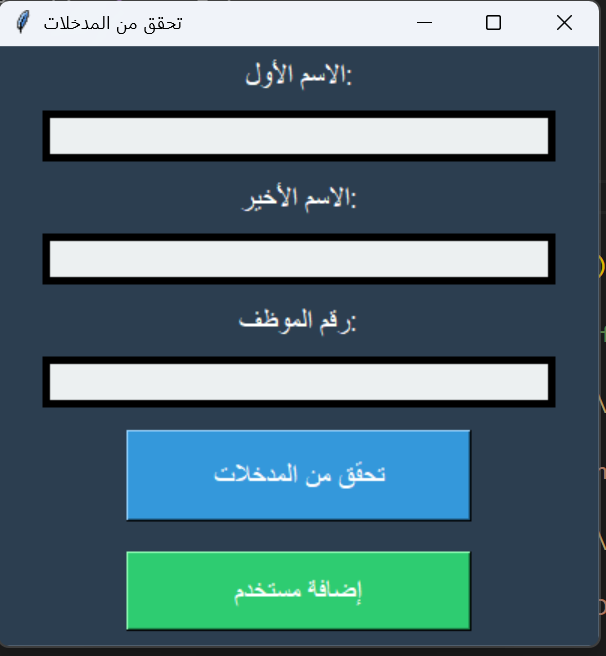
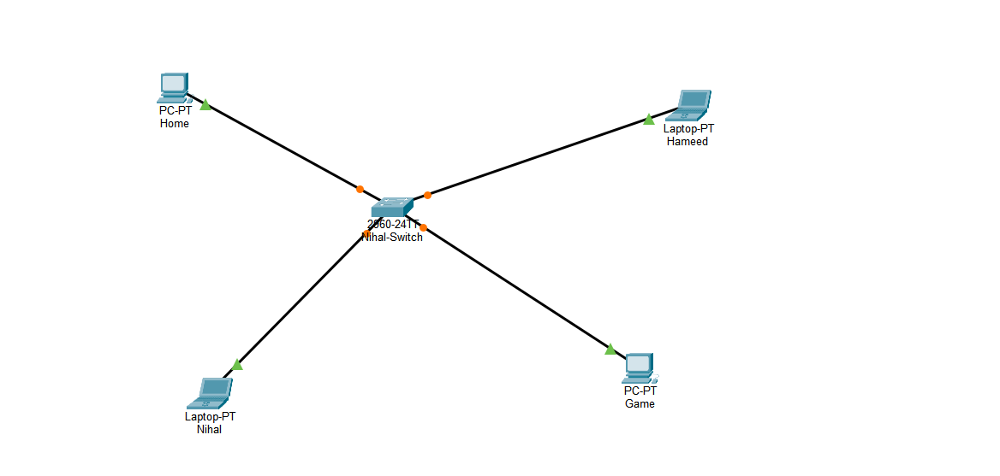

BURA / Arabic Photography Guidance
A team graduation project exploring real-time Arabic guidance before taking photos.
Private project
A selection of my projects, with a short overview and direct links to public source code.
A team graduation project exploring real-time Arabic guidance before taking photos.

A web application that brings together guest registration, room booking, reservation status tracking, and a central booking dashboard.

A Windows desktop application for entering expenses, configuring category budgets, and reviewing spending with a transaction table and pie chart.

A focused Python desktop application that checks employee form inputs and communicates errors or successful validation through message dialogs.

A local area network simulation in Cisco Packet Tracer, with four end devices connected to a central Cisco switch in a star topology.